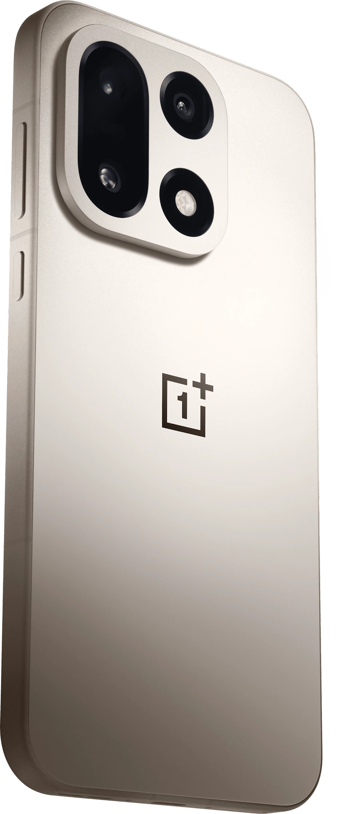
Экран
А вот и лицо
Экран LTPO AMOLED почти без рамок. Часы на нём настоящие — идут по московскому времени.
- 6,78дюйма
- 165Гц
- 1,15мм рамки
7300 мА·ч — самая большая батарея среди флагманов. Экран на 165 кадров в секунду. Зарядка на 120 ватт. И всё это в корпусе толщиной 8,1 мм.
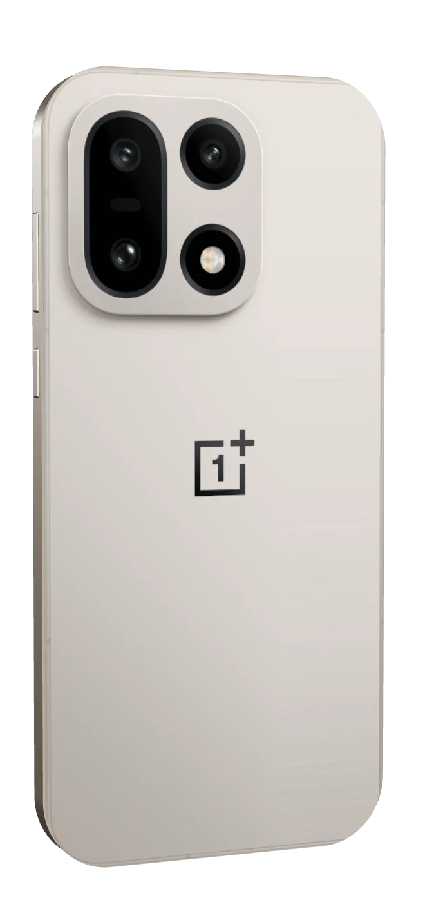
Дизайн
Разбор
Серия Clear Burst
Десять кадров — и все резкие
Официальная серия OnePlus: брызги сняты одной очередью, и ни один кадр не смазан. Листай — кадры пойдут по порядку.
Снято на OnePlus 15
День, ночь и движение
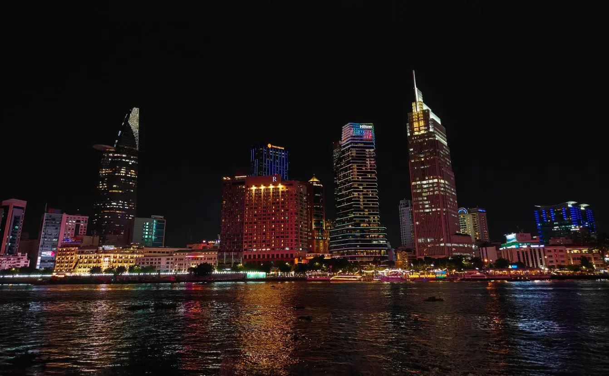
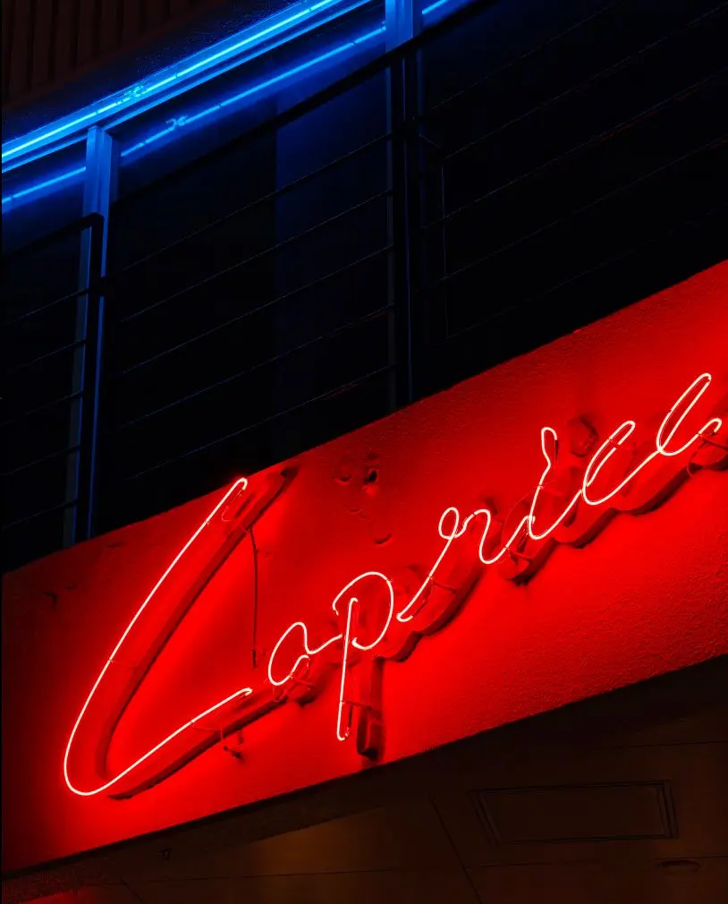
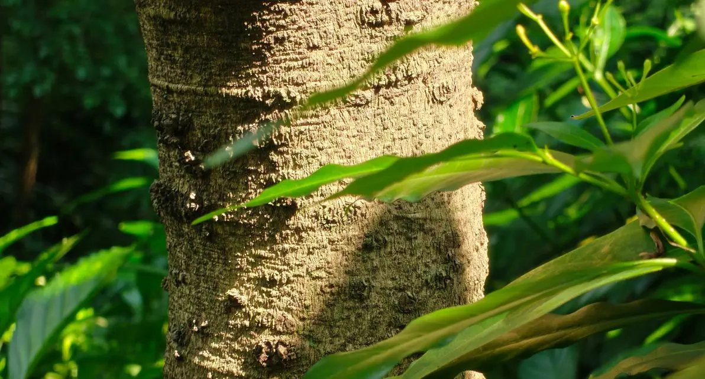
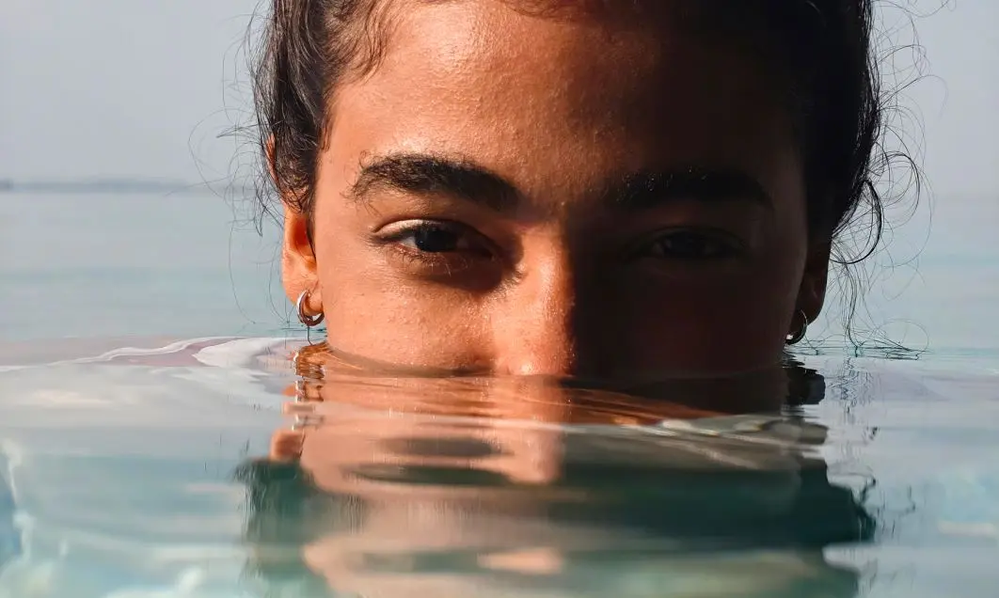
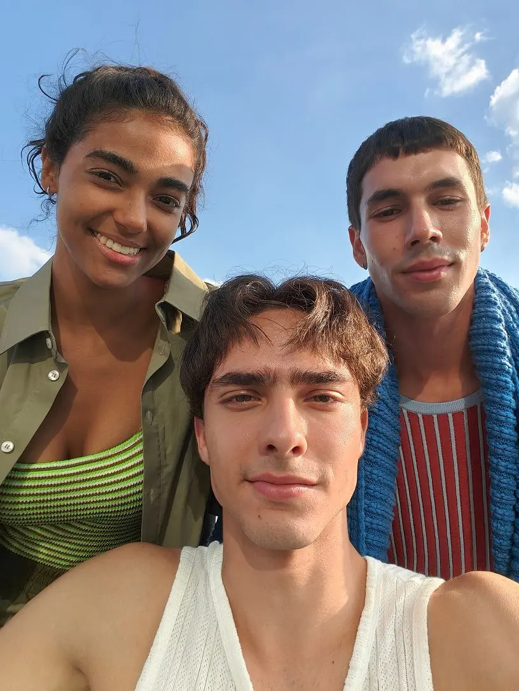
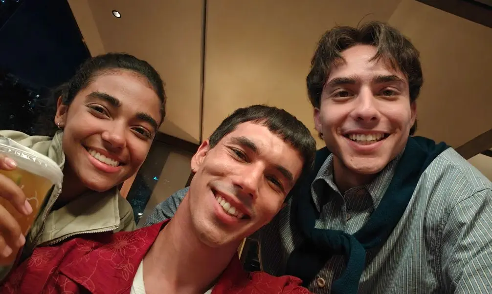
Фронтальная камера с автофокусом. Её сенсор пропускает на 60% больше света, чем обычный, поэтому лица в кадре светлые и после заката.
Мощность
Три чипа вместо одного
- Snapdragon 8 Elite Gen 5Главный чип. По данным OnePlus, процессор быстрее на 20%, графика — на 23%.
- Чип касанийОпрашивает экран 3200 раз в секунду: нажатие срабатывает сразу.
- Чип Wi-Fi G2Отдельный чип связи, как в роутере: сеть держится и за стеной.
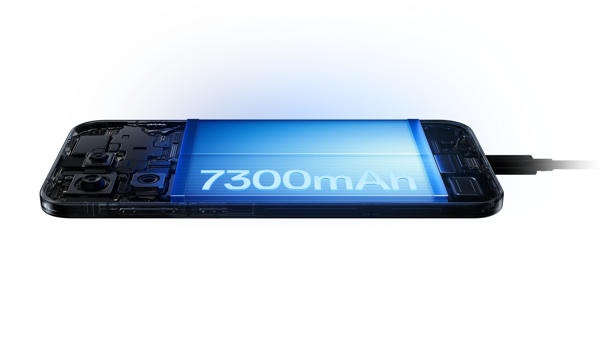
Батарея
7300 мА·ч внутри
Первый флагман с батареей больше 7000 мА·ч. До 31 часа видео без розетки.
- 120Вт: 100% за 39 минут
- 50Вт без провода
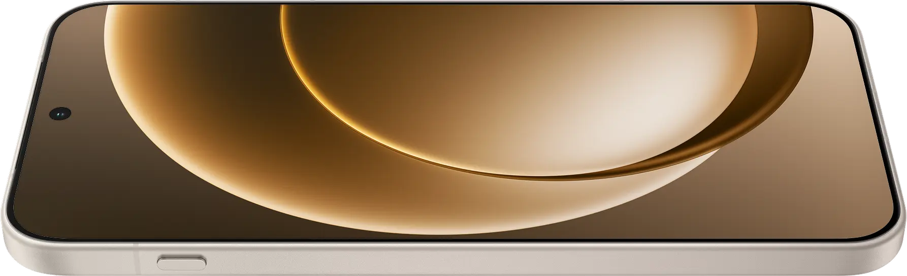
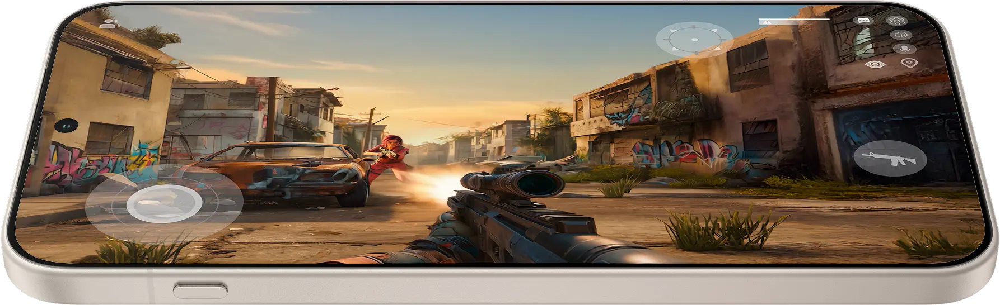
Экран
До 165 кадров в секунду
Экран 6,78″ сам меняет частоту от 1 до 120 Гц, а в играх разгоняется до 165. Рамки — 1,15 мм с каждой стороны.
В цифрах